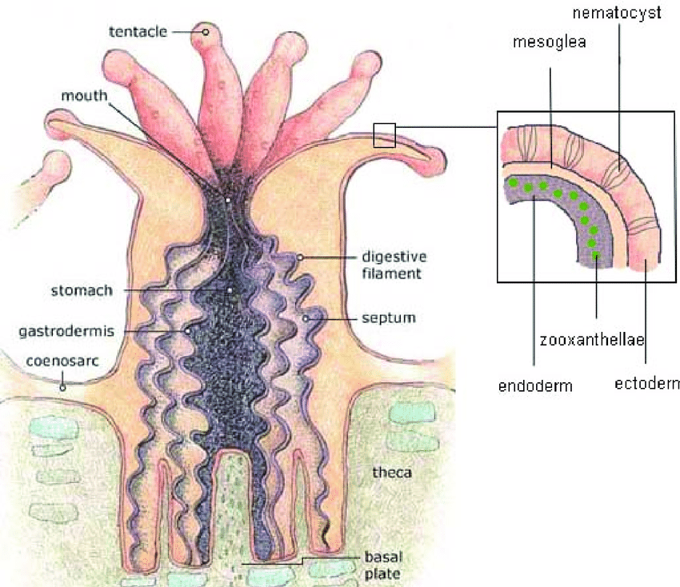
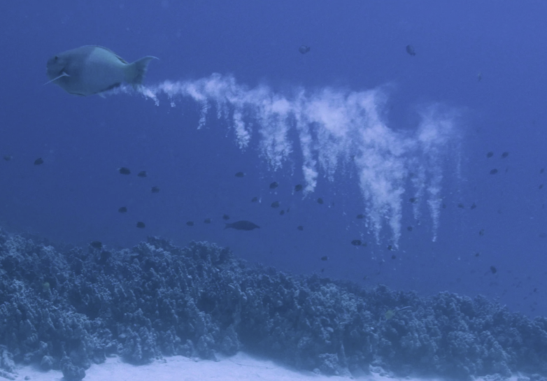
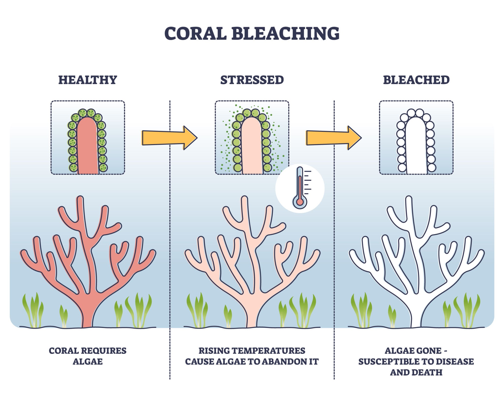

Understanding Corals
Architects of the oceans and guardians of the Reefs and coasts.
The Biological Engine: Symbiosis
The coral is a complex animal living in a vital symbiosis with zooxanthellae (microscopic algae). These algae reside directly within the coral's tissues and provide up to 90% of its energy needs (sugars and carbohydrates) via photosynthesis.
In exchange, the polyp provides a protected environment and the compounds necessary for photosynthesis. This energy surplus allows the polyp to secrete calcium carbonate, the building block of the massive reef structures found in Belize.
SURVIVAL PARAMETERS:
- Temperature: 23°C - 29°C
- Salinity: 34 - 37g of salt/kg
- High solar irradiance for photosynthesis
- PH: 8.1 - 8.3

Biodiversity and Ecosystem Foundations
Often called the "rainforests of the sea," reefs host 25% of all marine life—over a million species—despite occupying less than 0.2% of the ocean floor. They serve as essential nurseries and reproduction zones, offering protection against predators.
The Sand Cycle: Reefs are also geological architects. The grazing of coral by parrotfish schools produces massive amounts of sand. Ocean currents then transport this sand to form shallows, islands, and the foundations for mangroves and coastal forests.

Ecosystem Services and Economics
Coastal Protection
Reefs act as natural breakwaters along 150,000 km of coastline. They absorb 97% of wave energy (66% specifically in some Pacific areas), preventing erosion and protecting human infrastructure from hurricanes and tsunamis.
Food Security
500 million people depend on reefs. They provide 10% of global fish catch, reaching 70-90% in Southeast Asia. A well-managed reef can yield 5 to 15 tons of seafood per km² annually.
Global Economy
Estimated net annual benefit: $29.8 billion. This includes $9.6B in tourism, $9B in coastal protection, and $5.7B in fisheries. In many islands, 90% of economic development relies on reef tourism.
Medical Frontier
Corals share 48% of their genome with humans. Their chemical defense arsenal is being used to research treatments for cancer, Alzheimer's, and HIV. Their skeleton has been used for bone grafts since 1970.
Climate Regulation and The Bleaching Crisis
Reefs act as carbon sinks, absorbing significant amounts of CO2. However, they are victims of their own environment. Rising temperatures (GHG emissions) and ocean acidification stress the polyps, causing them to expel their zooxanthellae.
This bleaching leaves the white calcium skeleton exposed. Without the algae's energy, the coral starves. 14% of corals vanished between 2009 and 2018, and 90% could disappear by 2050.

Innovative Conservation Strategies
Assisted Restoration
Micro-fragmentation (pioneered by David Vaughan) allows corals to regenerate 25 to 40 times faster than in nature. Nurseries use metallic "trees" to grow fragments before replanting them.
Assisted Evolution
Scientists collect gametes from "super-corals" that survived heatwaves to create cross-bred species more resistant to warming. Laboratory fertilization increases survival rates from 1 in a million to significantly higher yields.
Substrate Innovation
Testing complex artificial materials with high relief to encourage polyp attachment in devastated areas, combined with manual algae removal to clear space for "baby" corals.